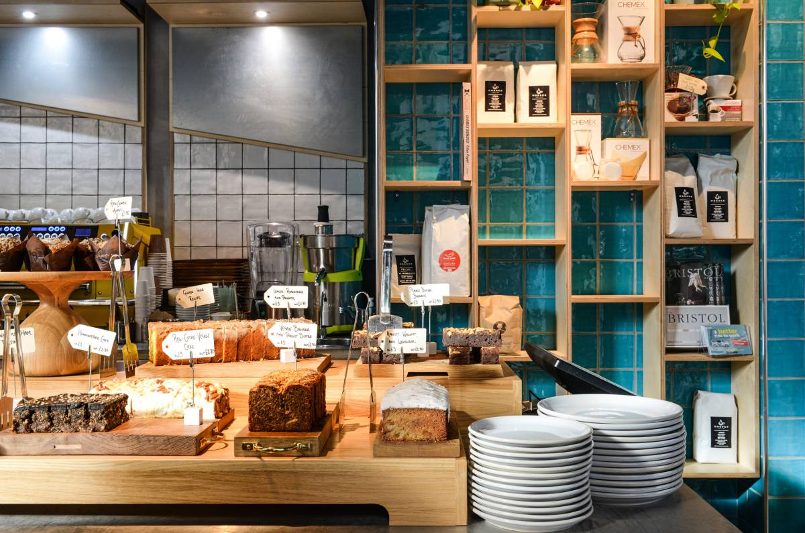

Ambience: 8/10
Ambience: 8/10
Price range: 3-5
Student friendly: Quite small but nice vibe
Friendly staff: 9/10
Wifi: Yes!
Types of food: Homemade baked goods and savouries
Vegetarian/Vegan: Many options available
Mokoko
Location: 7 Dorchester St, Southgate, Bath, BA1 1SS
Contact Number:01225 333444
TripAdvisor Reviews
A small space filled with good baristas and coffee
Wide range of baked goods, salad boxes and beautiful coffee art.
Find out more about Mokoko Coffee here!

Ambience: 9/10
Price range: 4-6
Student friendly: Too small
Friendly staff: 7/10
Wifi: No
Types of food: Homemade baked goods and savouries
Vegetarian/Vegan: Many options available (sweet and savoury)